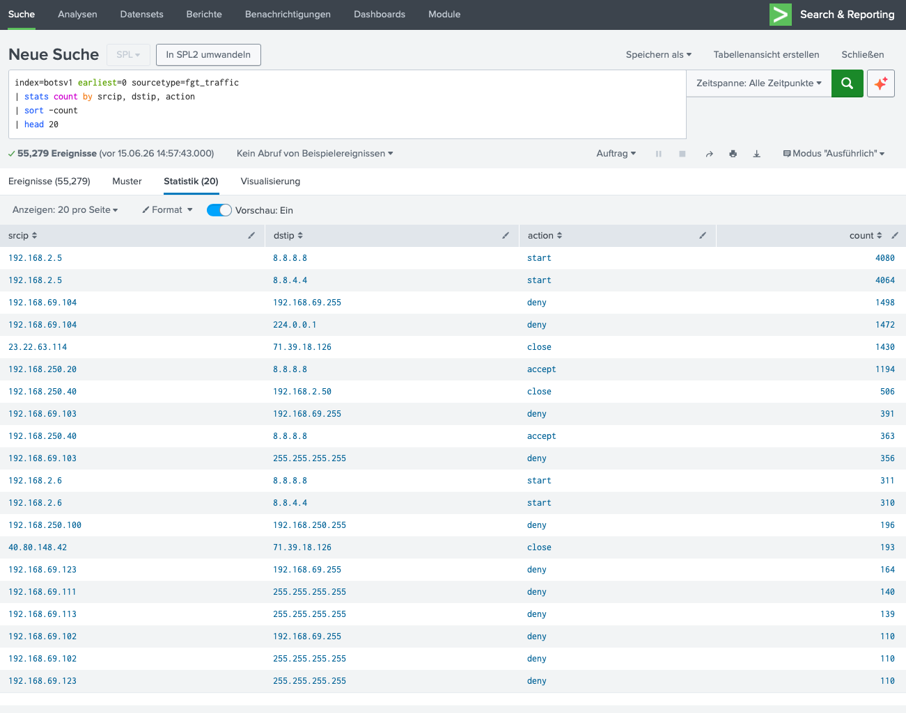

Kontext
Bisher haben wir die Attacke aus Endpoint- (Sysmon) und Netzwerk- (SMB, Suricata) Perspektive analysiert. Jetzt betrachten wir die Firewall-Logs: Wie sieht die Attacke aus Sicht der Perimeter-Security aus?
Fortigate Firewall Logs
Fortigate-Firewalls protokollieren jeden Verbindungsversuch mit den Feldern:
- srcip → Quell-IP (intern oder extern)
- dstip → Ziel-IP (intern oder extern)
- action → Firewall-Entscheidung:
accept,deny,close,start - dstport → Ziel-Port (z.B. 53 für DNS, 445 für SMB)
- app → Erkannte Applikation (z.B. DNS, HTTP, SMB)
Warum Firewall-Logs? Die Firewall ist die Grenze zwischen internem Netzwerk und Internet. Sie zeigt, welche Verbindungen erlaubt wurden (accept) und welche blockiert (deny). Für C2-Detection ist das essenziell: Wenn Malware mit externen Servern kommuniziert, muss die Firewall es protokollieren.
Die Analyse
Wir aggregieren alle Traffic-Events nach Quell-IP, Ziel-IP und Firewall-Action.
Das Ergebnis zeigt 20 unique Verbindungen mit 55.279 total Events.
Die Actions sind accept, deny, close und start.

Abb. 1 — Fortigate Traffic: 192.168.250.20 → 8.8.8.8 (accept, 1.194 Events) deutet auf C2-Kommunikation hin
Die Erkenntnisse
🔴 Kritisch: C2-Kommunikation (192.168.250.20 → 8.8.8.8)
Was wir sehen:
- srcip: 192.168.250.20 → Zielhost (Suricata detektierte Cerber hier)
- dstip: 8.8.8.8 → Google Public DNS
- action: accept → Firewall erlaubt die Verbindung
- Count: 1.194 → Sehr hohe Event-Anzahl
Das ist ein klarer C2-Indikator. Die Ransomware auf 192.168.250.20 kommuniziert mit Google DNS (8.8.8.8), um Domain-Namen aufzulösen. Die hohe Event-Anzahl (1.194) deutet auf DNS-Exfiltration oder C2-Domain-Resolution hin.
C2-Kommunikation erkannt: 192.168.250.20 (infizierter Host) kommuniziert 1.194 Mal mit 8.8.8.8 (Google DNS). Das ist typisch für Ransomware, die C2-Domains auflösen muss. In einer realen Umgebung wäre hier eine sofortige Isolation und DNS-Monitoring erforderlich.
🟡 Externe IP-Verbindung (23.22.63.114 → 71.39.18.126)
srcip: 23.22.63.114 ist eine externe IP (nicht im 192.168.x.x Subnet). Die Verbindung zu dstip: 71.39.18.126 (ebenfalls extern) mit action: close (1.438 Events) ist hochverdächtig.
Was bedeutet "close"? Die Firewall hat die Verbindung nicht aktiv blockiert, aber sie wurde geschlossen (z.B. wegen Timeout, RST, oder Firewall-Policy). Das kann ein Indikator für scan-versuche oder unautorisierte Verbindungen sein.
🟢 DNS-Abfragen (192.168.2.5 → 8.8.8.8 / 8.8.4.4)
srcip: 192.168.2.5 (Nessus Scanner) fragt Google DNS ab. Das ist normal — der Scanner macht DNS-Lookups für die gescannten Hosts.
🔴 Broadcast-Denies (192.168.69.x → 255.255.255.255)
Mehrere deny-Events für Broadcast-Adressen (192.168.69.255): Die Firewall blockiert Broadcast-Traffic zwischen Subnetzen. Das ist eine korrekte Sicherheitsmaßnahme — Broadcasts sollten nicht über Subnet-Grenzen gehen.
Attack-Chain aus Firewall-Perspektive
- Reconnaissance: Nessus (192.168.2.5) scannt → DNS-Lookups zu 8.8.8.8
- Initial Compromise: 192.168.250.100 wird infiziert
- Lateral Movement: SMB-Traffic über Subnet-Grenzen (Firewall loggt teilweise)
- C2 Communication: 192.168.250.20 → 8.8.8.8 (1.494 DNS-Lookups)
- Externe Verbindung: 23.22.63.114 → 71.39.18.126 (close, möglicherweise C2)
Defensive Maßnahmen
SPL-Queries
Fazit
Die Fortigate-Analyse vervollständigt das Bild der Cerber-Attacke:
- Suricata (IDS): Cerber-Signature auf dem Host detektiert
- SMB (Lateral Movement): Ransomware verbreitet sich im Netzwerk
- Sysmon (Endpoint): Masquerading-Prozess identifiziert
- Registry (Persistence): Auto-Run-Keys für Beständigkeit
- Fortigate (Perimeter): C2-Kommunikation (DNS) und externe Verbindungen
Die Firewall-Logs zeigen, dass die Perimeter-Security zwar den Großteil des Traffic kontrolliert, aber DNS-Traffic (Port 53) oft erlaubt wird — genau hier schlüpft die C2-Kommunikation durch. Für eine vollständige Detection ist daher DNS-Monitoring unverzichtbar.
Next Steps: UTM-Analyse (IPS/AV Signatures) mit sourcetype=fgt_utm
für detaillierte Security-Event-Logs.